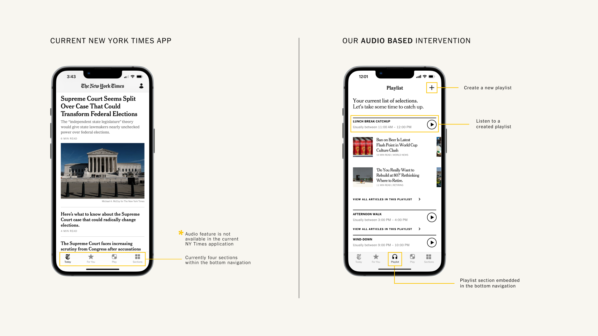

NY Times Playlists
ABOUT
New York Times Playlists allows occasional readers of the New York Times to maximize value from their subscription by allowing them to consume in-depth articles through audio. The solution allows New York Times articles to fit into their schedule and not the other way around; therefore, retaining existing subscribers who do not make the time to read.
JUMP TO SOLUTIONDURATION
November 2022 – December 2022
TEAM
Jonathan Choi, Soraya Elchehimi, Dennis Limbo, Karishma Sen
ROLE
Decision Maker, Art Direction, UI Designer, Researcher
TYPE
Experience Design
Problem Space
The New York Times has been focusing on their digital subscription count and have set a business goal of hitting 15 million digital subscribers by 2027. Although the growth in subscribers is in the upward trajectory for New York Times, the growth of their subscribers is on a decline and the main reason for this growth was proven to be a result of heavily discounted offers to entice readers to subscribe. Further studies also brought forth the insight of the New York Times being the most cancelled digital newspaper subscription as the perceived lack of time for reading did not match the regular rate they had to pay after the promotion rate ended.
Nieman Lab Survey
By combing through a survey conducted by Nieman Lab, which gathered insights from 503 respondents, the team derived another key insight on why subscribers were unsubscribing from the New York Times: respondents were cancelling because of information overload as they did not make the time to read news.
“I just don’t have the time to sit and read a newspaper anymore without a long commute on public transporation”
SURVEY RESPONDENT
Nieman Lab Article, "Cancel Culture: Why do People Cancel News Subscriptions?"
Framing
Through the insights gained from the survey as well as 1:1 interviews conducted with digital newspaper subscribers, the following problem statement and framing was the focus of this project:
Solution: NY Times Playlists
NY Times Audio seeks to seamlessly integrate into the occasional readers lifestyle by introducing news consumption in the form of audio. By giving readers another way to consume this material, it gives freedom to listeners to create their own playlist of articles that they find interest and enjoyment in while also letting them go about their day like they usually would.
Your Pace, Your Medium
Article playlists allow readers’ to integrate news content throughout their day– without having to allocate specific times to read. Listen or read with progress tracking to follow along with articles, allowing readers to pause, and pick up where they left off when needed.
“If I have the time and I am multi-tasking, I’ll listen to it instead of reading the whole [article].”
SPRINT INTERVIEWEE
Wall Street Journal Subscriber
Notify the Moments
Readers with busy schedules can identify moments in their day to send themselves push notifications so they can keep up with the news.
5 out of 7 interviewees stated that their morning routine involved planning the day with a calendar
SPRINT INTERVIEWEES
Just “For You”
Playlists will be created by a reader based off headlines that catch their interest. Self curation ensures that their limited time is spent on content that is important to them.
70% of Americans only read and skim headlines when they first engage with news content
RESEARCH CENTRE
Columbia University + the French National Institute
Value from Intervention
For the reader:
- Provide an alternative method to engage with news content
- Identify and schedule time to regularly read news during moments of free time
- Able to stay up to date with news as it develops throughout the day
For New York Times:
- Integrate news consumption into a reader’s daily life to create an engaged audience
- Helping readers maximize the value from a subscription in order to retain subscribers
Reflection
This project really started off with understanding the business problem that the New York Times was facing and providing a design solution. I believe I was able to exercise my prior business education to understand the problem space and utilize my skills as a designer to empathesize with the users to propose this solution.
As the decision maker for the sprint, there were moments where I took extra days to research clients and to call out moments when the project was falling short. We started with a client that was in an interesting space but no concrete business motivations which I had to make the difficult call to switch clients. That said, I also put in the extra hours during the days the team set out to take a break to make sure that I was bringing options to the team instead of just announcing we had to pivot. During this process, I combed through surveys that had 500 respondents that pointed towards New York Times having an evident business problem to solve and then pitched the new client to my team. I would like to thank the team for trusting in my process and gut feeling with the pivot.